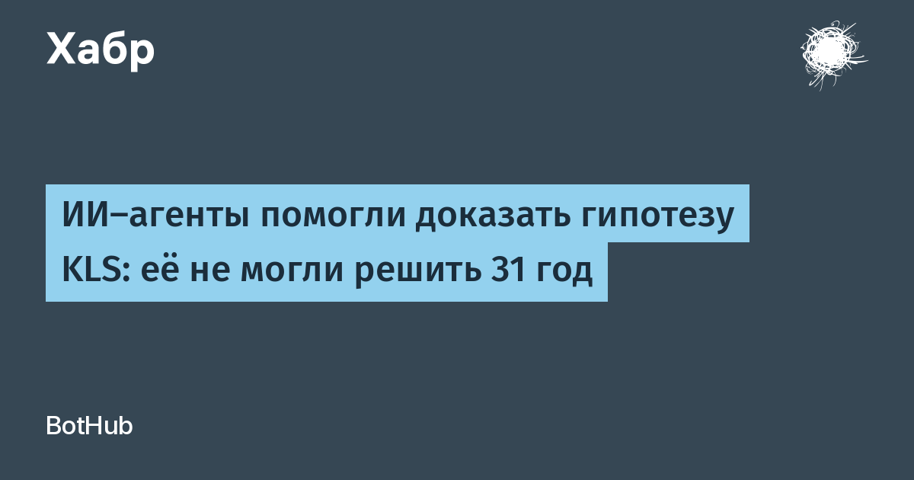

Гипотеза Каннана—Ловаса—Шимоновича (KLS) была предложена в 1995 году и спрашивает: для широкого класса многомерных вероятностных распределений всегда ли лучший «плоский» разрез (гиперплоскостью) эффективен хотя бы в универсальное постоянное число раз по сравнению с лучшим разрезом произвольной формы. Математический институт MSRI называл её «центральной открытой задачей многомерной выпуклой геометрии», а Институт Симонса — «одной из важнейших открытых проблем» этой области. Её решение снимает крупный теоретический барьер в понимании эффективности рандомизированных алгоритмов, которые используются в статистике, оптимизации и информатике.
21 октября 2026 года Microsoft Research опубликовала блог о работе своего исследователя Синьчжи Чжана и соавтора Чжао Сона. Ключевой акцент — не «ИИ сам всё решил», а управляемый человеком поиск: авторы использовали агентную систему, в которой ИИ исследовал математические возможности, а исследователи оценивали, отсекали и перенаправляли ветви поиска. По описанию Microsoft Research, за время работы было перебрано более ста возможных подходов, многие требовали объёмных тензорных вычислений. Сам текст доказательства — статья «An O(1) Bound for the KLS Constant» на arXiv.
Для математики это редкий по надёжности случай: в течение нескольких дней появились независимые доказательства от других групп, которые назвали центральный критерий работы «ключевым шагом в доказательстве». Вслед за ними вышла формализация на Lean 4, а сами авторы сократили доказательство и проверили его машинно — сокращённую версию опубликуют после финальной рецензии. Для сравнения: в мае 2026-го модель OpenAI опровергла 80-летнюю гипотезу из дискретной геометрии — тренд «ИИ в большой математике» набирает скорость, и теперь он всё чаще идёт в паре с формальной верификацией, а не вместо неё.
Доказательство KLS — редкий случай, когда заявлен не «угаданный нейросетью ответ», а полноценный результат, прошедший через стандарты математического сообщества: независимые перепроверки и машинную проверку. Именно связка «человек ставит цель и отсекает ветви поиска, ИИ перебирает гипотезы» выглядит рабочей моделью автоматизации исследований — и именно её Microsoft подаёт как главный методический вывод работы.